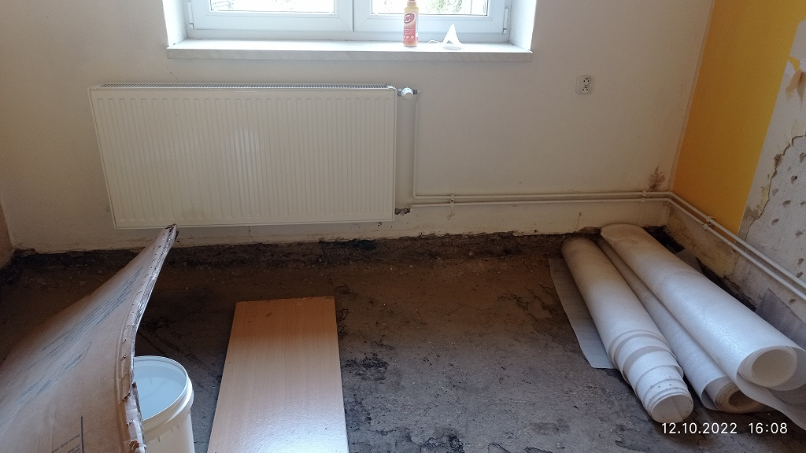

obr.1 V obou rozích u této zdi jsou betonové sloupky plotu. Nevadí to? Ve vzdálenějším rohu je pak "kubíkáč" ale ten mohu zrušit. Foto nasleduje.
obr.2 Kubíkáč lze dát pryč. I ten okap lze jednoduše vysunout pokud by vadil. Problém může být v pravém (na fotce) rohu zdi, kdy je v oblasti řezání schodiště z litého terasa.
obr.3 Nevím zda podřezávat tuto zeď. Vede tam pak voda (ukrývá ji strom), nebo jestli řezat k té vodě a pak už ne? Je to vlastně ta "předsíň".
obr.4 Tady by se řezalo asi do půlky (jestli je to reálné, blíž k nám je pak ložnice, která má betonovou podlahu a na ní plovoucí a pak je tam v úrovni podlahy a odvětrávací lišta. Lze to realizovat? Nebo je pak uvnitř lepší injektáž? z důvodu té hotové podlahy?
obr.5 Zde je detail toho betonového sloupku. Nebude překážet?
obr.6 Zde je to schodiště z litého terasa, bohužel se mi zdá, že jsou schody v místě případného řezu. Jak moc je to velká komplikace?
obr.7 Tato stěna je na druhé straně v "prostoru pod schody (obr. 19 a dále)", v rohu jsou pak ty schody z litého terasa.
obr.8 Všude, kde je topení... Nepoškodí se? Vůbec nevím, co dělat, kdyby to začalo někde téci.
obr.9 Tady je vidět ta "trubka" o které nic nevím, doufejme, že tím nevede třeba elektřina, protože zatím opravdu netuším, kudy do domu vede. Snad je to ten starý odpad.
obr.10 Tuto díru hodlám vybetonovat, mám před řezem? Nebo až po? Jak dlouho může schnout ten beton? Stihnu to před realizací?
obr.11 Komín se také podřeže? Snad ten "nerez" není moc nízko a snad komín nespadne.
obr.12 Řez půjde pod dveřmi a pod prahy? Prahy mají jít pryč?
obr.13 Toto je místo před komínem z předcházející místnosti (dětského pokoje). Nejspíše bych měl před řezáním vybrat starou podlahu a doufám, že tam nebude žádné překvapení, místnost by pak vypadala, jako ten dětský pokoj.
obr.14 Opět doufám, že se nepoškodí topení.
obr.15
obr.16 Zde je zeď mezi obývákem a ložnicí, která má tu betonovou podlahu a lišty. Dá se podřezat? Jakou paseku to udělá na druhé straně?
obr.17 Toto je první roh, kde jsme si všimli vlhkosti, z druhé strany je taková "komůrka" s plynem. A v chodbě je pak znovu lité teraso.
obr.18 Toto je z fotka z druhé strany předcházející (dveře do obýváku vlevo a do komůrky vpravo).
obr.19 Vedle dětského je prostor pod schody, který má asi 2,3m a stěna v dětském je cca 3,3m, tzn, že tam je metr "něčeho" a netuším čeho, ale je v tom trubka s vodou do zahrady. Směrem ven, neměla by být ve stěně dětského pokoje.
obr.20 detail
obr.21 Tady je patrná ta voda, ale orientace fotky může mást, voda je ve směru schodů.
obr.22 Zeď, která také vlhne, vpravo jsou dveře do "prostoru pod schody". V levé (na fotce) části zdi začínají pak opět schody a pod linem je také lité teraso.
Pokud si najdete čas, prosím zavolejte +420731595950.
V Opavě dne 14. 10. 2022 Pavel Martínek